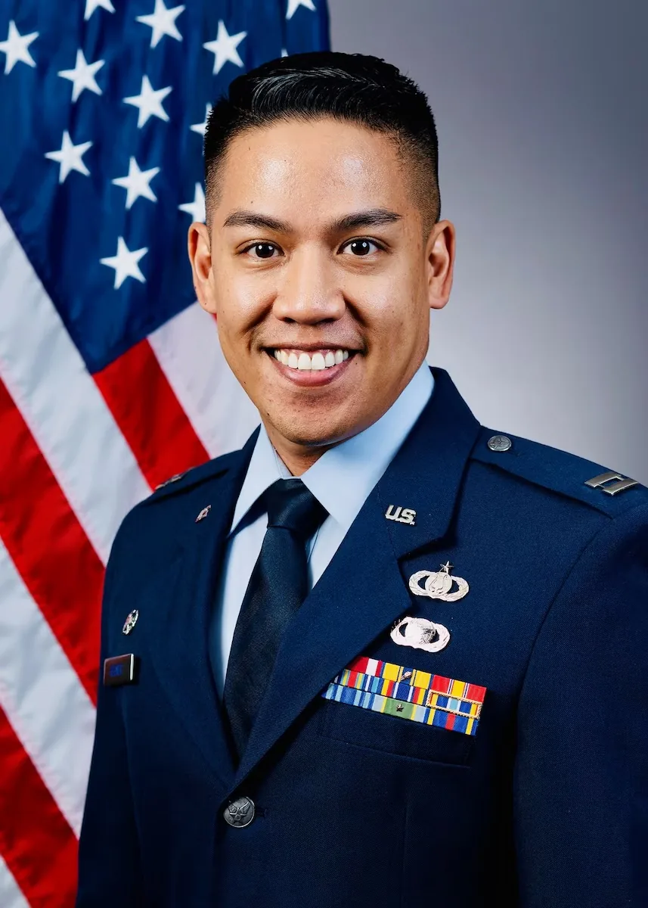
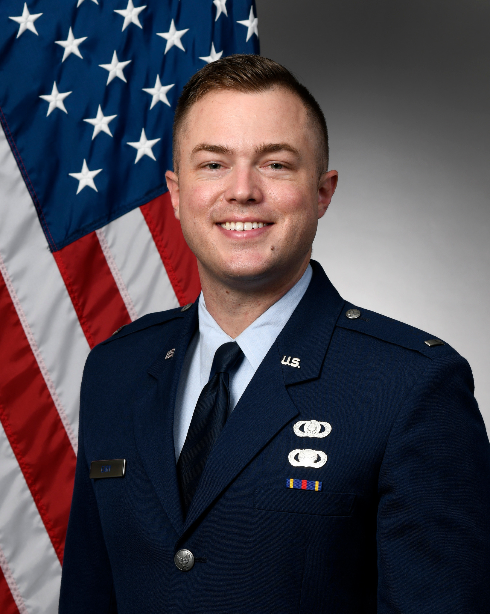

Holiday in Blue 2026
Musical arrangements by Technical Sergeant Justis MacKenzie
This Christmas
Hathaway
Silver Bells
Livingston and Evans/ver. Connick Jr.
Ocho Kandelikas
Jagoda/ver. Menzel
God Rest Ye Merry Gentlemen
ver. Miller
O Christmas Tree
Arr. Paich and MacKenzie
Pan American Nutcracker Suite
Tchaikovsky
III. Dance of the Sugar Plum Fairy
VI. Chinese Dance
VII. Dance of the Reed Flutes
Christmas Time in Texas
Straight
I Believe in Santa Claus
Parton & Rogers
I Saw Mommy Kissing Santa Claus
Connor
Little Drummer Boy
ver. for King & Country
Have Yourself a Merry Little Christmas
Martin and Blane
How Do You Fly
Cullum
I’ll Be Home for Christmas
Kent
Performance Dates & Venues
December 5
Rockwall High School Performing Arts Center
1201 T L Townsend Dr
Rockwall, TX 75087 (opens Google Maps in a new tab)
December 6
McFarlin Auditorium
Southern Methodist University
6405 Boaz Ln
Dallas, TX 75205 (opens Google Maps in a new tab)
December 10
Hutto High School Auditorium
101 Chris Kelley Blvd
Hutto, TX 78634 (opens Google Maps in a new tab)
December 11
Bates Recital Hall
University of Texas at Austin
2406 Robert Dedman Dr
Austin, TX 78712 (opens Google Maps in a new tab)
December 12
Dripping Springs High School Theatre Arts
940 US 290
Dripping Springs, TX 78620 (opens Google Maps in a new tab)
December 14, 15 & 16
The Majestic Theatre
224 E Houston St
San Antonio, TX 78205 (opens Google Maps in a new tab)
About
The United States Air Force Band of the West is the Air Force's premier musical organization serving the southern United States. Based at Joint Base San Antonio–Lackland, Texas, its professional Airmen-musicians represent the United States Air Force through performances that honor military service, strengthen community relationships, and inspire future generations.
Each year, the Band of the West presents hundreds of performances throughout Texas, Oklahoma, Louisiana, Mississippi, Alabama, Georgia, Florida, Puerto Rico, and beyond. The organization includes the Concert Band, Ceremonial Marching Band, Dimensions in Blue, Top Flight, Velocity, and several chamber ensembles, allowing the band to perform music ranging from classical masterworks and military ceremonies to jazz and popular music.
Tracing its lineage to 1941, the Band of the West has earned a national reputation for musical excellence while serving audiences at military ceremonies, civic events, schools, and concert halls throughout the region.
Captain David Neil C. Regner
Commander & Conductor
Biography
Captain David Neil C. Regner
Commander & Conductor
Biography
Captain David Neil C. Regner is the commander and conductor of the United States Air Force Band of the West, Joint Base San Antonio, Texas. Under his leadership, 60 airman-musicians perform more than 300 events each year throughout the Southeast to honor America’s service members and veterans, inspire young people to serve, and connect the public with their Air and Space Forces.
He is responsible for organizing, training, and equipping the unit to communicate Department of the Air Force strategic messages with Americans at home and to strengthen international partnerships when deployed abroad.
Capt. Regner commissioned as a graduate of Officer Training School in August 2017. Since then, he has led Air Force bands in community, diplomatic, and ceremonial missions in 10 countries, 33 states, and Washington D.C, reaching a combined broadcast and live audience of over 50 million people.
A native of West Orange, New Jersey, Captain Regner served four years as a high school band director at Arlington High School in LaGrangeville, New York prior to joining the Air Force. He earned a Bachelor of Music degree in music education from Rutgers University, where he studied with Darryl Bott, and his Master of Music degree in conducting from Northwestern University, where he studied with Mallory Thompson.
Education
2010 Bachelor of Music, Music Education, Rutgers University, N.J.
2013 Master of Music, Wind Conducting, Northwestern University, Ill.
2017 Air Force Officer Training School, Maxwell Air Force Base, Ala.
2018 Public Affairs Qualification Course, Defense Information School, Fort Meade, Md.
2022 Squadron Officer School, Air University, Maxwell Air Force Base, Ala.
Assignments
1. September 2017 - June 2021, Flight Commander, USAF Heritage of America Band, Joint Base Langley-Eustis, Va.
2. June 2021 - July 2022, Commander, USAF Heritage of America Band, Joint Base Langley-Eustis, Va.
3. July 2022 - July 2025, Flight Commander, The United States Air Force Band, Joint Base Anacostia-Bolling, Va. (Officer in Charge, U.S. Air Forces Central Command Band, Al Udeid Air Base, Qatar)
4. July 2025 - Present, Commander, USAF Band of the West, Joint Base San Antonio-Lackland, Texas
Major Awards and Decorations
Meritorious Service Medal
Air Force Commendation Medal with one oak leaf cluster
National Defense Service Medal
Global War on Terrorism Expeditionary Medal
Global War on Terrorism Service Medal
Other Achievements
2018 Air Combat Command Public Affairs Company Grade Officer of the Year
2020 Air Combat Command Public Affairs Company Grade Officer of the Year
2024 11th Wing Company Grade Officer of the Year
Effective Date of Promotion
Second Lieutenant August 31, 2017
First Lieutenant August 31, 2019
Captain August 31, 2021
Current as of 18 May 2026
First Lieutenant B. Drew Eary
Associate Conductor
Biography
First Lieutenant B. Drew Eary
Associate Conductor
Biography
First Lieutenant Benjamin Andrew “Drew” Eary serves as Flight Commander and Associate Conductor of the United States Air Force Band of the West, Lackland Air Force Base, Texas. Lt Eary assists the Commander in leading 60 Airmen in performances and engagements throughout a 7-state area of responsibility, including affiliated US territories.
He has led tours and performances across the Southern United States, programming messaging and performances for the Band of the West to inspire and connect with the American public. He also has represented the USAF in diplomatic and ceremonial missions both at home and in partnership with the Argentinian Air Force in Buenos Aires, Argentina.
Originally from Peoria, Arizona, Lt. Eary received the Doctor of Musical Arts degree in Wind Band Conducting from The University of Texas at Austin. He earned a Master of Music in Conducting from Columbus State University and a Bachelor of Music in Music Education and Clarinet Performance from The University of Arizona. His conducting teachers are Professor Jerry Junkin, Dr. Jamie L. Nix, Professor Jay C. Rees, and Professor Gregg Hanson.
Before pursuing graduate studies, Lt Eary was proudly the first Director of Bands at Casteel High School in Queen Creek, Arizona.
Lt Eary has appeared as a featured guest conductor with the United States Army Band “Pershing’s Own”, the Austin Brass Collective, and as a clinician for region honor bands and ensembles in multiple states. He was also a Conducting Fellow for the H. Robert Reynolds Conducting Institute at the 75th Annual Midwest Clinic in Chicago, Illinois and was named a finalist for the 2021 American Prize in Conducting.
Lt Eary is active as a transcriber and arranger, conducting the premiere of his transcription of the Wind Band version of Maria Sigfusdottir’s Grammy-nominated “Oceans” in 2023.
Education
2014 Bachelor of Music in Music Education and Bachelor of Music in Clarinet Performance, The University of Arizona, Ariz.
2021 Master of Music in Wind Band Conducting, Columbus State University, Ga.
2024 Doctor of Musical Arts in Wind Band Conducting, The University of Texas at Austin, Texas
2024 Officer Training School, Maxwell Air Force Base, Ala.
2026 Public Affairs & Communication Strategy Qualification Course, Fort Meade, Md.
Assignments
1. July 2024 - September 2024, Student, Officer Training School, Maxwell Air Force Base, Ala.
2. October 2024 - Present, Flight Commander, USAF Band of the West, Joint Base San Antonio-Lackland, Texas
Effective Dates of Promotion
Second Lieutenant 27 September 2024
First Lieutenant 27 September 2026
Concert Band Personnel
*denotes section leader • tap for expanded roster
Woodwinds
Flute
Staff Sergeant Teresa Perrin, USAF*
Sergeant First Class Jonathan Burgos, USA
Oboe
Staff Sergeant Kathryn Bloise, USAF
Senior Airman Leah Solis, USAF*
Clarinet
Technical Sergeant Michele Von Haugg, USAF
Staff Sergeant Sarah Smelser, USAF
Staff Sergeant Julian Bohorquez, USAF
Senior Airman Mark Allen, USAF*
Senior Airman Dalton Tran, USAF
Bassoon
Staff Sergeant Burton Fowler, USAF
Senior Airman Oleksander Kashlyuk, USAF*
Saxophone
Staff Sergeant Jason Galbraith, USAF*
Senior Airman Peter Burkholder, USAF
Brian Christensen
Rami El-Farrah
Brass
Trumpet
Master Sergeant Quincy Garner, USAF
Technical Sergeant Laura Kluga, USAF
Technical Sergeant Justin Weisenborn, USAF
Senior Airman Christopher Stein, USAF
Airman First Class Luis Clebsch, USAF*
Karlos Elizondo
Horn
Staff Sergeant Derek Akers, USAF
Staff Sergeant Rose MacKenzie, USAF
Airman First Class Emma Nixon, USAF*
Airman First Class Nicholas Welicky, USAF
Trombone
Staff Sergeant Evan Sankey, USAF
Airman First Class Nathan Gardner, USAF*
Corey Sansolo
Jeanette Velasco
Euphonium
Staff Sergeant Tom Mahovsky, USAF
Tuba
Staff Sergeant Bruno Gutierrez, USAF
Airman First Class Evan Dommer, USAF
Percussion & Rhythm
Piano
Airman First Class Ben Pozo, USAF
Guitar
Master Sergeant Jesse Thompson, USAF
Bass
Staff Sergeant Jack McDonald, USAF
Percussion
Senior Airman Ross Hussong, USAF
Technical Sergeant Benjamin Johnson, USAF
Airman First Class Wyatt Hatch, USAF*
Airman First Class Lance Davis, USAF
Vocals
Airman First Class Sam Saxton, USAF
Staff Sergeant Adrianna Dickson, USAF
Audio
Master Sergeant Kelcey McDonald, USAF
Airman First Class Gabriel Ottomanelli, USAF
Arranger
Technical Sergeant Justis MacKenzie, USAF
Conductors
Captain David Neil C. Regner, USAF
First Lieutenant B. Drew Eary, USAF
Digital Media and Production
Technical Sergeant Ryan Rager, USAF